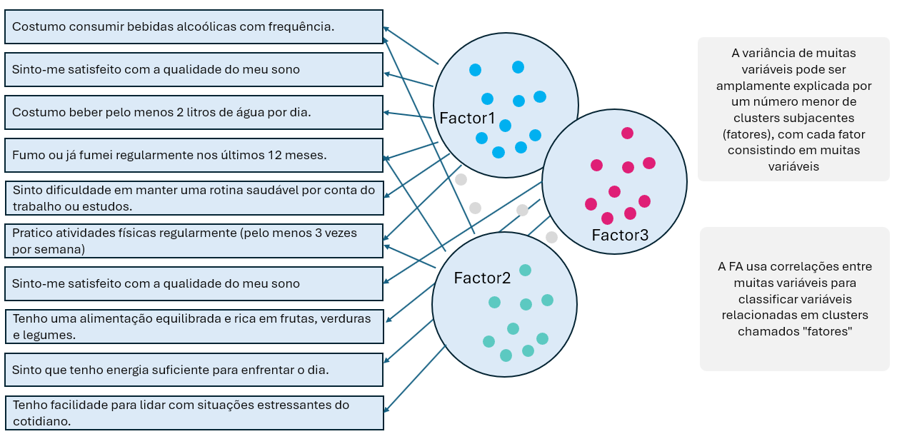

# Carregue os pacotes ou instale-os no caso de ainda não ter.
library(tidyverse)
library(psych)
library(GPArotation)
library(gt)Análise Fatorial Exploratória (EFA)
O que é a EFA
A Análise Fatorial Exploratória (EFA) é uma técnica estatística multivariada usada para identificar a estrutura subjacente (fatores latentes) em um conjunto de variáveis observadas. Ela busca agrupar variáveis correlacionadas entre si em fatores comuns, revelando padrões ocultos nos dados.
É chamada de “exploratória” porque não parte de uma hipótese prévia sobre o número ou a natureza dos fatores, ao contrário da Análise Fatorial Confirmatória (CFA), que testa modelos específicos.

Qual o objetivo?
O principal objetivo da EFA é reduzir a dimensionalidade dos dados e descobrir estruturas latentes que explicam as correlações entre variáveis. Isso permite:
- Identificar agrupamentos naturais de variáveis.
- Compreender melhor os construtos teóricos por trás dos dados.
- Preparar modelos mais simples e interpretáveis.
- Apoiar o desenvolvimento de escalas e instrumentos de medida (como questionários).
De onde vem?
Ela surgiu no campo da psicometria e da psicologia, especialmente para entender traços de personalidade e habilidades cognitivas. Foi desenvolvida como uma resposta à necessidade de compreender fenômenos complexos que não podiam ser observados diretamente, mas inferidos a partir de múltiplas variáveis.
Ela se baseia em conceitos de correlação, covariância e álgebra linear, especialmente decomposição de matrizes.
Como fazer?
Aqui está um passo a passo prático para realizar uma EFA em R:
Preparar os dados verificando se há dados faltantes, certifique-se de que as variáveis são numéricas e correlacionáveis.
Verificar a adequação dos dados usando teste de Kaiser-Meyer-Olkin (KMO) e ou teste de esfericidade de Bartlett.
Escolher o número de fatores usando scree plot (gráfico de sedimentação), critério de Kaiser (autovalores > 1), e análise paralela.
Executar a EFA usando a função
factanal()ou pacotes comopsych(fa()), escolher o método de extração (ex: máxima verossimilhança, componentes principais) e escolher o tipo de rotação (ex: varimax, oblimin).Interpretar os resultados analisando as cargas fatoriais, verificando comunalidades e variância explicada e validar a consistência dos fatores.
Refinar o modelo eliminando variáveis com baixa carga ou comunalidade e reexecutando a análise se necessário.
Para praticar, iremos usar três exemplos sendo o primeiro com dados contínuos o segundo com com dados categóricos dicotômicos, e terceiro com dados mistos(categóricos dicotômicos e ordinais e numéricos).
Neste passo, faremos a verificação e adequação dos dados usando funções como KMO e Teste de esfericidade de Bartlett.
O teste KMO (Kaiser-Meyer-Olkin) é uma métrica avalia a adequação dos seus dados para a Análise Fatorial. Ele mede a proporção da variância entre as variáveis que pode ser considerada comum. Valores mais próximos de 1 indicam que as correlações entre os pares de variáveis são compactas e que a análise fatorial produzirá fatores distintos e confiáveis. Essencialmente, ele responde se suas variáveis formam um conjunto coeso.
Já o Teste de esfericidade de Bartlett verifica a hipótese de que a sua matriz de correlação é uma matriz identidade, o que significaria que as variáveis não são correlacionadas. Um resultado estatisticamente significativo (geralmente p < 0.05) é desejado, pois rejeita essa hipótese e confirma que existe correlação suficiente entre as variáveis para justificar a aplicação da análise fatorial.
Aqui, faremos a escolha do número de fatores. O gráfico Scree Plot nos ajudará a visualizar o número ideal de fatores com base nos autovalores.
O gráfico gerado pela função fa.parallel() é um Scree Plot com Análise Paralela. Ele ajuda a separar os fatores que são realmente significativos do “ruído” aleatório nos dados.
A linha azul (com “triangulo”) representa os autovalores (a importância) de cada fator extraído dos seus dados reais. A linha vermelha (tracejada) representa a média dos autovalores que seriam esperados em um conjunto de dados aleatórios, sem estrutura real, mas com o mesmo número de variáveis e observações que o seu.
A regra é simples: você deve reter o número de fatores cujos autovalores (pontos na linha azul) estão acima dos autovalores correspondentes dos dados aleatórios (a linha vermelha). Portanto, o fato de você ter 3 pontos da linha azul acima da linha vermelha é uma forte indicação de que existem 3 fatores latentes significativos em seus dados. Os fatores seguintes estão abaixo da linha vermelha, o que sugere que eles provavelmente representam apenas variação aleatória (ruído) e não devem ser incluídos no seu modelo.
# Teste KMO
KMO(cor(data_consumo))$MSAi |>
enframe(name = "variable", value = "value") |>
gt::gt()| variable | value |
|---|---|
| consumo_online1 | 0.7148735 |
| consumo_online2 | 0.7555012 |
| consumo_online3 | 0.7699634 |
| fidelidade_marca1 | 0.7669390 |
| fidelidade_marca2 | 0.7612777 |
| fidelidade_marca3 | 0.7368293 |
| preocupação_preço1 | 0.7539072 |
| preocupação_preço2 | 0.7900853 |
| preocupação_preço3 | 0.7303154 |
| misc1 | 0.4193540 |
| misc2 | 0.6864583 |
| misc3 | 0.4946445 |
# Teste de esfericidade de Bartlett
cortest.bartlett(cor(data_consumo), n = n) |> as_tibble() |> gt::gt()| chisq | p.value | df |
|---|---|---|
| 2002.223 | 0 | 66 |
# Scree plot
fa.parallel(data_consumo, fa = "fa", n.obs = n)
Parallel analysis suggests that the number of factors = 3 and the number of components = NA Pra onde vai?
A análise fatorial exploratória serve como base para modelos mais avançados, como a Análise Fatorial Confirmatória (CFA) e Modelagem de Equações Estruturais (SEM) e é amplamente utilizada em diferentes áreas como:
- Psicologia e educação: desenvolvimento de testes e escalas.
- Marketing: segmentação de consumidores com base em comportamentos.
- Saúde: identificação de padrões em sintomas ou respostas a tratamentos.
- Ciências sociais: estudo de atitudes, valores e crenças.
Qual resultado?
Após realizarmos a análise fatorial exploratória
- Um conjunto de fatores latentes que explicam a estrutura dos dados.
- Redução da complexidade do modelo.
- Melhor compreensão dos constructos teóricos.
- Um modelo mais parcimonioso e interpretável.
Esses resultados ajudam na tomada de decisão, no desenvolvimento de instrumentos de medida e na validação de teorias.